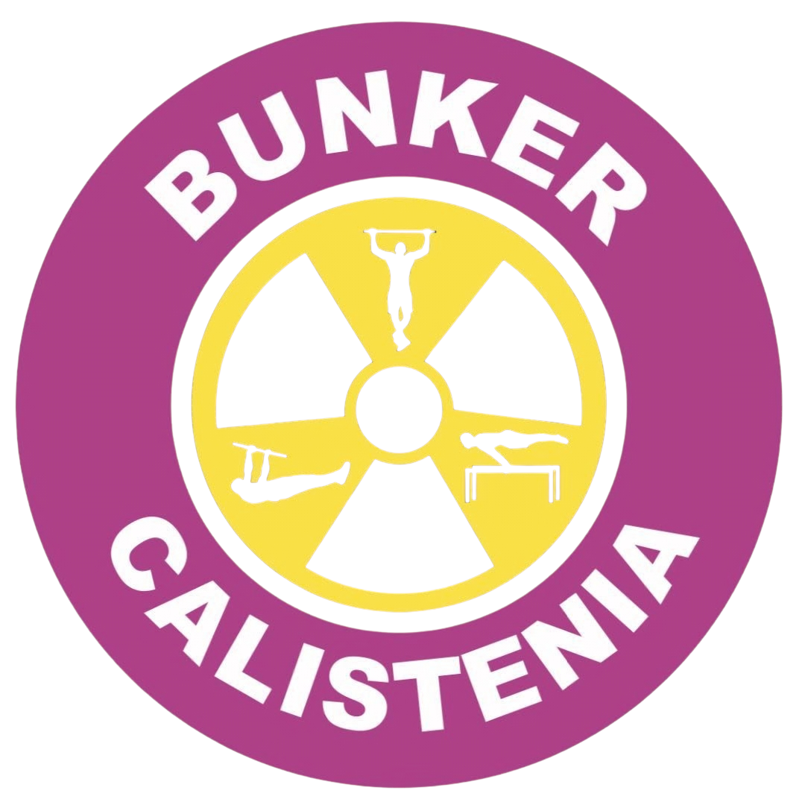

La palabra calistenia proviene del griego kallos (belleza) y sthenos (fuerza). Se define como un sistema de ejercicios físicos realizados con el propio peso corporal, centrado en el desarrollo de la fuerza, la agilidad, la flexibilidad y el control del cuerpo.
A diferencia de otros deportes que utilizan pesas externas, la calistenia se basa en la fuerza relativa, que es la capacidad de mover tu propio cuerpo en relación a su peso. Su objetivo no es solo ganar músculo, sino lograr una alineación correcta, mejorar la postura y adquirir una gran capacidad de movimiento funcional.
Para que tu entrenamiento sea efectivo y seguro, nos basamos en estos principios fundamentales extraídos de los manuales profesionales:
Progresión Gradual: La dificultad no se aumenta añadiendo kilos, sino cambiando el ángulo del cuerpo o la palanca del ejercicio para que el músculo trabaje más.
Forma y Técnica: Es vital realizar cada repetición con un rango de movimiento completo y control total. Una técnica perfecta demuestra que tienes la fuerza real para controlar tu peso.
Entrenamiento Compuesto: La calistenia rara vez aísla un solo músculo. Al hacer una dominada o una flexión, involucras grandes cadenas musculares que trabajan en conjunto, mejorando la coordinación intermuscular.
Cuidado de las Articulaciones: Como el esfuerzo recae en tendones y ligamentos, es obligatorio realizar una movilidad articular previa y respetar los tiempos de descanso para evitar lesiones.
Descubrí en qué etapa estás hoy y qué deberías priorizar para avanzar. Este mapa te va a ayudar a entender dónde estás parado antes de seguir entrenando en automático.
Este mapa existe para determinar en qué etapa estas y planificar tu crecimiento dentro de la disciplina. La mayoría de las personas se estanca no porque no entrenen, sino porque entrenan sin entender en qué etapa están.
Hay 4 etapas en el desarrollo del atleta de calistenia: 1.Calistenia desde Cero 2.Control avanzado 3.Modo atleta 4.Alto rendimiento
La etapa que más resuena con vos, es donde estás hoy.
Es el momento en que empezás a hacer calistenia o a entrenar en general, puede que vengas de entrenar otro deporte o actividad. Hay dos puntos en común, tenes poca experiencia en calistenia y físicamente no podés realizar más de 6 repeticiones de dos ejercicios rectores, dominadas o pull ups y fondos o dips.
Vas a escuchar mucho sobre dominar los “básicos”, pero ¿qué son?
En calistenia los básicos son movimientos generales que involucran múltiples músculos de forma integrada para lograr ejercicios objetivos, si podés hacerlos indican que tenes el suficiente control corporal. Los usamos de punto referencia, como medida de capacidad, para cuantificar que podés hacer o no, y que tenga sentido lo que vas a entrenar.
Salir de la fuerza máxima en los básicos y construir el hábito.
No hace calistenia o recién empieza Capacidad por debajo de 6 repeticiones en básicos Cada repetición cuesta mucho Se cansa rápido No hay regularidad clara
Los ejercicios básicos todavía funcionan como fuerza máxima (no podés hacer más de 6 repeticiones, con buena técnica, de los “pesados”). El cuerpo no está preparado para acumular volumen ni progresar.
Entrenar de forma regular (3-4 veces por semana) Tener conciencia básica de alimentación. Comer Saludable y medido Poder realizar al menos:
No se busca estética perfecta, se busca capacidad mínima funcional.
Puede ser que puedas hacer todo eso desde el día 1, seguramente porque tenes buena capacidad innata o venís de entrenar otra actividad, pero tenés poca experiencia acumulada en general en calistenia. Seguís en esta etapa, solamente que tenes más capacidad, acá busca hacer al menos un mes regular de entrenamiento con las repeticiones que puedas controlar y buscá “nivelar” tu capacidad entre tirón, empuje, piernas…
En esta etapa ya tenés experiencia entrenando calistenia, al menos 3 meses en general y podés hacer más de 6 repeticiones de los básicos elementales. En “control avanzado” es donde te volves resistente a los básicos, siendo tu trabajo aumentar poco a poco tu capacidad total de hacer repeticiones de cada patrón, siendo el objetivo superar las 10-15 repeticiones con buena técnica.
Acá ya vas a sentirte en control, podes probar variantes más avanzadas de los básicos como las dominadas a una mano y las flexiones a una mano, al menos sus progresiones con asistencia, incluso puede que logres el muscle up. Secundariamente tu físico se adecua a medida que toleres más entrenamiento, perdes porcentaje de grasa, ganas más masa muscular, siempre que acompañes con la dieta acorde y la recuperación necesaria. Intuitivamente vas a ir comiendo mejor, llegado el caso te recomiendo complementar con nutricionista, o mínimo una app de tracking de alimentación.
Si no acompañas el entrenamiento con la nutrición, vas a ver como quedas estancado ya que o pesas más (por grasa) o no desarrollas masa muscular que te ayude a rendir más o como “tenes el cuerpo grande” no podés moverte con libertad (nuevamente, porque tenes que bajar tu grasa corporal para sentirte cómodo).
Transformar fuerza básica en resistencia y control real.
Ya domina los básicos Los ejercicios “salen” Empieza a sentir que está estancada Tiene mejor composición corporal Ya no es principiante, pero tampoco atleta
La fuerza ya está. Ahora hay que organizarla, sostenerla y controlarla
Más de: 10 dominadas 10–15 fondos 20 flexiones Variantes de pierna: Pistol Squat Primeras variantes avanzadas de básicos: Flexiones a una mano, Dominadas a una mano (progresiones), Primeros intentos de Muscle-up Composición corporal: IMC acorde, Más masa muscular que grasa
Acá te recomiendo que tu entrenamiento tenga menos repertorio, si estabas entrenando skills, los pospongas y te enfoques en mejorar en esas repeticiones que te van a habilitar a pasar a la etapa 3. Aplica el foco y no la dispersión, acá menos es muchísimo más.
Si llegaste hasta acá e hiciste bien el trabajo de las dos anteriores, te convertís en atleta de calistenia, acá empieza el desarrollo de los skills o habilidades. Lograr front lever, plancha, back lever, handstand o verticales, son habilidades, no ejercicios. Un ejercicio es un gesto deportivo con una finalidad, dirección, duración e intensidad, que busca una adaptación, mientras que una habilidad o skill es demostrar tu control. La calistenia es un deporte, como tal, tiene objetivos, además de desarrollar el cuerpo, el objetivo es lograr estos skills
Desarrollar habilidades (skills) con fuerza específica.
Ya piensa en skills Entiende que entrenar no es solo hacer básicos Empieza a entrenar de forma más técnica El foco deja de ser “músculos” y pasa a ser movimientos
El entrenamiento se orienta al desarrollo de habilidades, no a partes del cuerpo. Se entrenan los levers (palancas), el balance (handstand), la fuerza dinámica (subida a vertical por fuerza, muscle up) y la integración de capacidades, mediante el uso de progresiones (que tan “estirado” está el cuerpo en la postura).
Trabajo sistemático de skills: Front lever, Back lever, Plancha, Handstand Progresiones: Tuck, Advanced tuck, 1 leg, half lay, Straddle, Full Vertical sólida y controlada Flexiones en Handstand Piernas unipodal y en volumen Core siempre presente, pero se entrena de forma indirecta + refuerzo
Esta etapa lleva tiempo, si las anteriores las hiciste bien, puede ser relativamente más simple. Demanda enfoque, evitar dispersiones y en general, es la más reglada y organizada hasta ahora, es en la que muchos se pierden, porque no tienen un sistema claro de objetivos y progresiones. El paso a paso, escalón por escalón, el entrenamiento por objetivos es la clave del progreso, si bien parece que hay mucho por entrenar, en realidad hay que decir no a mucho, para enfocarse en los fundamentos de cada habilidad. Llegar aquí es decisivo. Para evitar que la dificultad se transforme en frustración, te acompañamos semana a semana con clases en vivo y una planificación estructurada que garantiza que te sientas motivado y seguro en cada sesión
Haber logrado las habilidades y desarrollado las técnicas te convierten en un atleta pro, ahora podés pasar a entrenar la resistencia a las skills y la fuerza dinámica. Pasar desde postura de Plancha a vertical (press de plancha), para bajar a plancha de nuevo y agregar flexiones, combinado con una transición en la paralela (alta) a Front lever, agregar remos o pull ups de front lever, y así hasta que llegues a tu máxima capacidad. Combinar o separar y especializar, esta etapa es donde llevas la calistenia a otra dimensión.
Aplicar la fuerza técnica con resistencia, combinaciones y fluidez.
Ya logró los levers y el balance Tiene control, fuerza y técnica El cuerpo está optimizado Busca combinaciones y fuerza dinámica
Ya no se persiguen habilidades aisladas, se integran. Se desarrolla fuerza dinámica sobre los logros de la etapa anterior.
Levers logrados: Full front lever, Full back lever, Full planche Fuerza dinámica avanzada: Series de front lever pull-ups, Presses y combinaciones Alta resistencia a la fuerza técnica Combinaciones tipo competencia Capacidad de sostener rendimiento sin perder forma
Si llegaste hasta acá, ya hiciste algo que muy poca gente hace: ordenar el camino antes de seguir entrenando. El plan de entrenamiento, la nutrición y recuperación hacen al rendimiento directo del atleta, por lo que se tiene un marco de trabajo para cada área. Esto no es un “sacrificio” ni nada por el estilo, es el resultado de un camino, y llegas si tuviste la transformación necesaria.
En Bunker desbloqueas un método específico para progresar sin estancamientos. Dominarás la ciencia de entrenar por objetivos, la progresión lógica de básicos a habilidades complejas y un sistema de entrenamiento eficiente para obtener resultados reales en poco tiempo.
¡Inicia tu plan personalizado ahora!